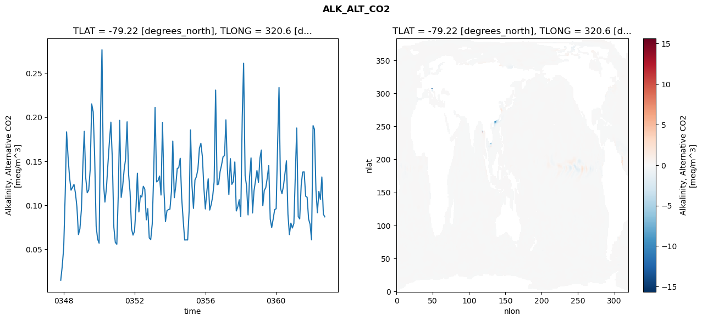
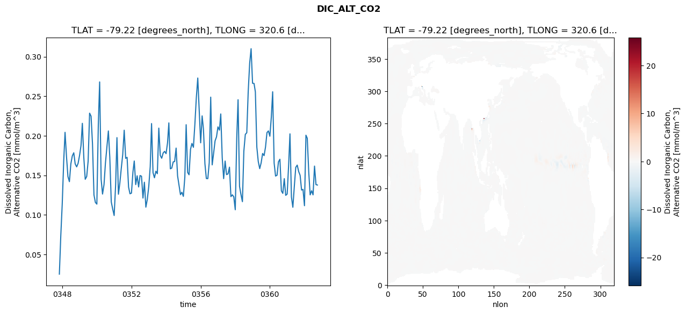
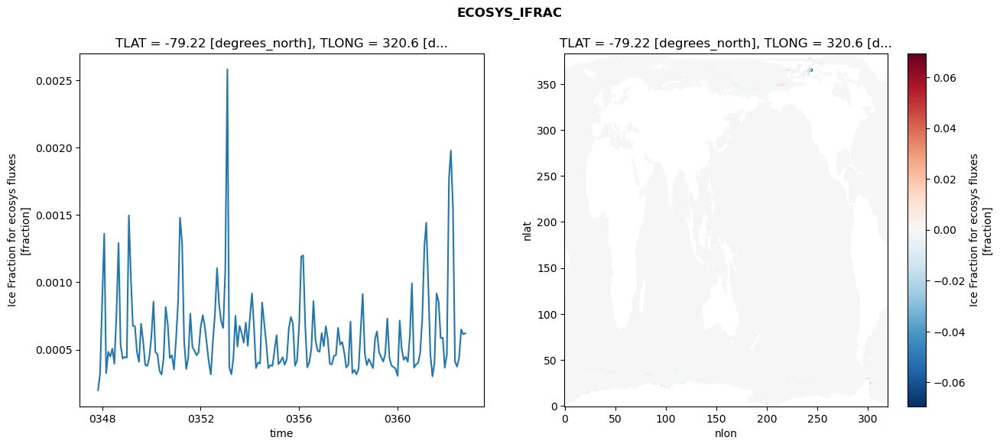
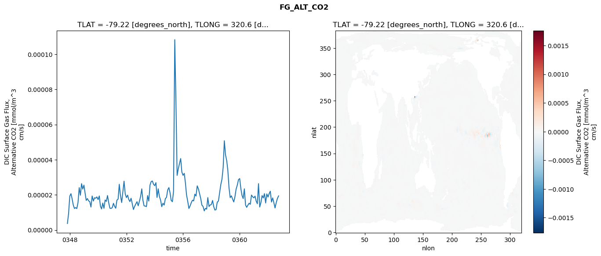

glb-dor_North_Atlantic_basin_032_1999-10-01_00131#
Simulation details#
Case: smyle.cdr-atlas-v0.glb-dor_North_Atlantic_basin_032_1999-10-01_00131.001
Basin: North_Atlantic_basin
Polygon: 32.0
Start date: 1999-10
Show code cell source Hide code cell source
import xarray as xr
import matplotlib.pyplot as plt
Show code cell source Hide code cell source
zarr_store = "/path/to/zarr/store"
# Parameters
zarr_store = "/global/cfs/projectdirs/m4746/Projects/Ocean-CDR-Atlas-v0/data/validation/smyle.cdr-atlas-v0.glb-dor_North_Atlantic_basin_032_1999-10-01_00131.001.validation.zarr"
Show code cell source Hide code cell source
%%time
ds_o = xr.open_zarr(zarr_store).compute()
ds_o
CPU times: user 673 ms, sys: 461 ms, total: 1.13 s
Wall time: 1.46 s
<xarray.Dataset> Size: 2MB
Dimensions: (nlat: 384, nlon: 320, time: 180)
Coordinates:
TLAT float64 8B -79.22
TLONG float64 8B 320.6
ULAT float64 8B -78.95
ULONG float64 8B 321.1
* time (time) object 1kB 0347-11-01 00:00:00 ... 0362-10-01 0...
z_t float32 4B 500.0
Dimensions without coordinates: nlat, nlon
Data variables:
ALK_ALT_CO2_diff (nlat, nlon) float32 492kB nan nan nan ... nan nan nan
ALK_ALT_CO2_rmse (time) float64 1kB 0.01475 0.03024 ... 0.08986 0.08679
DIC_ALT_CO2_diff (nlat, nlon) float32 492kB nan nan nan ... nan nan nan
DIC_ALT_CO2_rmse (time) float64 1kB 0.02492 0.07326 ... 0.1382 0.1377
ECOSYS_IFRAC_diff (nlat, nlon) float32 492kB nan nan nan ... nan nan nan
ECOSYS_IFRAC_rmse (time) float64 1kB 0.0001981 0.0003197 ... 0.0006214
FG_ALT_CO2_diff (nlat, nlon) float32 492kB nan nan nan ... nan nan nan
FG_ALT_CO2_rmse (time) float64 1kB 3.691e-06 9.306e-06 ... 1.94e-05xarray.Dataset
- nlat: 384
- nlon: 320
- time: 180
- TLAT()float64-79.22
- long_name :
- array of t-grid latitudes
- units :
- degrees_north
array(-79.22052261)
- TLONG()float64320.6
- long_name :
- array of t-grid longitudes
- units :
- degrees_east
array(320.56250892)
- ULAT()float64-78.95
- long_name :
- array of u-grid latitudes
- units :
- degrees_north
array(-78.95289509)
- ULONG()float64321.1
- long_name :
- array of u-grid longitudes
- units :
- degrees_east
array(321.12500894)
- time(time)object0347-11-01 00:00:00 ... 0362-10-...
- bounds :
- time_bound
- long_name :
- time
array([cftime.DatetimeNoLeap(347, 11, 1, 0, 0, 0, 0, has_year_zero=True), cftime.DatetimeNoLeap(347, 12, 1, 0, 0, 0, 0, has_year_zero=True), cftime.DatetimeNoLeap(348, 1, 1, 0, 0, 0, 0, has_year_zero=True), cftime.DatetimeNoLeap(348, 2, 1, 0, 0, 0, 0, has_year_zero=True), cftime.DatetimeNoLeap(348, 3, 1, 0, 0, 0, 0, has_year_zero=True), cftime.DatetimeNoLeap(348, 4, 1, 0, 0, 0, 0, has_year_zero=True), cftime.DatetimeNoLeap(348, 5, 1, 0, 0, 0, 0, has_year_zero=True), cftime.DatetimeNoLeap(348, 6, 1, 0, 0, 0, 0, has_year_zero=True), cftime.DatetimeNoLeap(348, 7, 1, 0, 0, 0, 0, has_year_zero=True), cftime.DatetimeNoLeap(348, 8, 1, 0, 0, 0, 0, has_year_zero=True), cftime.DatetimeNoLeap(348, 9, 1, 0, 0, 0, 0, has_year_zero=True), cftime.DatetimeNoLeap(348, 10, 1, 0, 0, 0, 0, has_year_zero=True), cftime.DatetimeNoLeap(348, 11, 1, 0, 0, 0, 0, has_year_zero=True), cftime.DatetimeNoLeap(348, 12, 1, 0, 0, 0, 0, has_year_zero=True), cftime.DatetimeNoLeap(349, 1, 1, 0, 0, 0, 0, has_year_zero=True), cftime.DatetimeNoLeap(349, 2, 1, 0, 0, 0, 0, has_year_zero=True), cftime.DatetimeNoLeap(349, 3, 1, 0, 0, 0, 0, has_year_zero=True), cftime.DatetimeNoLeap(349, 4, 1, 0, 0, 0, 0, has_year_zero=True), cftime.DatetimeNoLeap(349, 5, 1, 0, 0, 0, 0, has_year_zero=True), cftime.DatetimeNoLeap(349, 6, 1, 0, 0, 0, 0, has_year_zero=True), cftime.DatetimeNoLeap(349, 7, 1, 0, 0, 0, 0, has_year_zero=True), cftime.DatetimeNoLeap(349, 8, 1, 0, 0, 0, 0, has_year_zero=True), cftime.DatetimeNoLeap(349, 9, 1, 0, 0, 0, 0, has_year_zero=True), cftime.DatetimeNoLeap(349, 10, 1, 0, 0, 0, 0, has_year_zero=True), cftime.DatetimeNoLeap(349, 11, 1, 0, 0, 0, 0, has_year_zero=True), cftime.DatetimeNoLeap(349, 12, 1, 0, 0, 0, 0, has_year_zero=True), cftime.DatetimeNoLeap(350, 1, 1, 0, 0, 0, 0, has_year_zero=True), cftime.DatetimeNoLeap(350, 2, 1, 0, 0, 0, 0, has_year_zero=True), cftime.DatetimeNoLeap(350, 3, 1, 0, 0, 0, 0, has_year_zero=True), cftime.DatetimeNoLeap(350, 4, 1, 0, 0, 0, 0, has_year_zero=True), cftime.DatetimeNoLeap(350, 5, 1, 0, 0, 0, 0, has_year_zero=True), cftime.DatetimeNoLeap(350, 6, 1, 0, 0, 0, 0, has_year_zero=True), cftime.DatetimeNoLeap(350, 7, 1, 0, 0, 0, 0, has_year_zero=True), cftime.DatetimeNoLeap(350, 8, 1, 0, 0, 0, 0, has_year_zero=True), cftime.DatetimeNoLeap(350, 9, 1, 0, 0, 0, 0, has_year_zero=True), cftime.DatetimeNoLeap(350, 10, 1, 0, 0, 0, 0, has_year_zero=True), cftime.DatetimeNoLeap(350, 11, 1, 0, 0, 0, 0, has_year_zero=True), cftime.DatetimeNoLeap(350, 12, 1, 0, 0, 0, 0, has_year_zero=True), cftime.DatetimeNoLeap(351, 1, 1, 0, 0, 0, 0, has_year_zero=True), cftime.DatetimeNoLeap(351, 2, 1, 0, 0, 0, 0, has_year_zero=True), cftime.DatetimeNoLeap(351, 3, 1, 0, 0, 0, 0, has_year_zero=True), cftime.DatetimeNoLeap(351, 4, 1, 0, 0, 0, 0, has_year_zero=True), cftime.DatetimeNoLeap(351, 5, 1, 0, 0, 0, 0, has_year_zero=True), cftime.DatetimeNoLeap(351, 6, 1, 0, 0, 0, 0, has_year_zero=True), cftime.DatetimeNoLeap(351, 7, 1, 0, 0, 0, 0, has_year_zero=True), cftime.DatetimeNoLeap(351, 8, 1, 0, 0, 0, 0, has_year_zero=True), cftime.DatetimeNoLeap(351, 9, 1, 0, 0, 0, 0, has_year_zero=True), cftime.DatetimeNoLeap(351, 10, 1, 0, 0, 0, 0, has_year_zero=True), cftime.DatetimeNoLeap(351, 11, 1, 0, 0, 0, 0, has_year_zero=True), cftime.DatetimeNoLeap(351, 12, 1, 0, 0, 0, 0, has_year_zero=True), cftime.DatetimeNoLeap(352, 1, 1, 0, 0, 0, 0, has_year_zero=True), cftime.DatetimeNoLeap(352, 2, 1, 0, 0, 0, 0, has_year_zero=True), cftime.DatetimeNoLeap(352, 3, 1, 0, 0, 0, 0, has_year_zero=True), cftime.DatetimeNoLeap(352, 4, 1, 0, 0, 0, 0, has_year_zero=True), cftime.DatetimeNoLeap(352, 5, 1, 0, 0, 0, 0, has_year_zero=True), cftime.DatetimeNoLeap(352, 6, 1, 0, 0, 0, 0, has_year_zero=True), cftime.DatetimeNoLeap(352, 7, 1, 0, 0, 0, 0, has_year_zero=True), cftime.DatetimeNoLeap(352, 8, 1, 0, 0, 0, 0, has_year_zero=True), cftime.DatetimeNoLeap(352, 9, 1, 0, 0, 0, 0, has_year_zero=True), cftime.DatetimeNoLeap(352, 10, 1, 0, 0, 0, 0, has_year_zero=True), cftime.DatetimeNoLeap(352, 11, 1, 0, 0, 0, 0, has_year_zero=True), cftime.DatetimeNoLeap(352, 12, 1, 0, 0, 0, 0, has_year_zero=True), cftime.DatetimeNoLeap(353, 1, 1, 0, 0, 0, 0, has_year_zero=True), cftime.DatetimeNoLeap(353, 2, 1, 0, 0, 0, 0, has_year_zero=True), cftime.DatetimeNoLeap(353, 3, 1, 0, 0, 0, 0, has_year_zero=True), cftime.DatetimeNoLeap(353, 4, 1, 0, 0, 0, 0, has_year_zero=True), cftime.DatetimeNoLeap(353, 5, 1, 0, 0, 0, 0, has_year_zero=True), cftime.DatetimeNoLeap(353, 6, 1, 0, 0, 0, 0, has_year_zero=True), cftime.DatetimeNoLeap(353, 7, 1, 0, 0, 0, 0, has_year_zero=True), cftime.DatetimeNoLeap(353, 8, 1, 0, 0, 0, 0, has_year_zero=True), cftime.DatetimeNoLeap(353, 9, 1, 0, 0, 0, 0, has_year_zero=True), cftime.DatetimeNoLeap(353, 10, 1, 0, 0, 0, 0, has_year_zero=True), cftime.DatetimeNoLeap(353, 11, 1, 0, 0, 0, 0, has_year_zero=True), cftime.DatetimeNoLeap(353, 12, 1, 0, 0, 0, 0, has_year_zero=True), cftime.DatetimeNoLeap(354, 1, 1, 0, 0, 0, 0, has_year_zero=True), cftime.DatetimeNoLeap(354, 2, 1, 0, 0, 0, 0, has_year_zero=True), cftime.DatetimeNoLeap(354, 3, 1, 0, 0, 0, 0, has_year_zero=True), cftime.DatetimeNoLeap(354, 4, 1, 0, 0, 0, 0, has_year_zero=True), cftime.DatetimeNoLeap(354, 5, 1, 0, 0, 0, 0, has_year_zero=True), cftime.DatetimeNoLeap(354, 6, 1, 0, 0, 0, 0, has_year_zero=True), cftime.DatetimeNoLeap(354, 7, 1, 0, 0, 0, 0, has_year_zero=True), cftime.DatetimeNoLeap(354, 8, 1, 0, 0, 0, 0, has_year_zero=True), cftime.DatetimeNoLeap(354, 9, 1, 0, 0, 0, 0, has_year_zero=True), cftime.DatetimeNoLeap(354, 10, 1, 0, 0, 0, 0, has_year_zero=True), cftime.DatetimeNoLeap(354, 11, 1, 0, 0, 0, 0, has_year_zero=True), cftime.DatetimeNoLeap(354, 12, 1, 0, 0, 0, 0, has_year_zero=True), cftime.DatetimeNoLeap(355, 1, 1, 0, 0, 0, 0, has_year_zero=True), cftime.DatetimeNoLeap(355, 2, 1, 0, 0, 0, 0, has_year_zero=True), cftime.DatetimeNoLeap(355, 3, 1, 0, 0, 0, 0, has_year_zero=True), cftime.DatetimeNoLeap(355, 4, 1, 0, 0, 0, 0, has_year_zero=True), cftime.DatetimeNoLeap(355, 5, 1, 0, 0, 0, 0, has_year_zero=True), cftime.DatetimeNoLeap(355, 6, 1, 0, 0, 0, 0, has_year_zero=True), cftime.DatetimeNoLeap(355, 7, 1, 0, 0, 0, 0, has_year_zero=True), cftime.DatetimeNoLeap(355, 8, 1, 0, 0, 0, 0, has_year_zero=True), cftime.DatetimeNoLeap(355, 9, 1, 0, 0, 0, 0, has_year_zero=True), cftime.DatetimeNoLeap(355, 10, 1, 0, 0, 0, 0, has_year_zero=True), cftime.DatetimeNoLeap(355, 11, 1, 0, 0, 0, 0, has_year_zero=True), cftime.DatetimeNoLeap(355, 12, 1, 0, 0, 0, 0, has_year_zero=True), cftime.DatetimeNoLeap(356, 1, 1, 0, 0, 0, 0, has_year_zero=True), cftime.DatetimeNoLeap(356, 2, 1, 0, 0, 0, 0, has_year_zero=True), cftime.DatetimeNoLeap(356, 3, 1, 0, 0, 0, 0, has_year_zero=True), cftime.DatetimeNoLeap(356, 4, 1, 0, 0, 0, 0, has_year_zero=True), cftime.DatetimeNoLeap(356, 5, 1, 0, 0, 0, 0, has_year_zero=True), cftime.DatetimeNoLeap(356, 6, 1, 0, 0, 0, 0, has_year_zero=True), cftime.DatetimeNoLeap(356, 7, 1, 0, 0, 0, 0, has_year_zero=True), cftime.DatetimeNoLeap(356, 8, 1, 0, 0, 0, 0, has_year_zero=True), cftime.DatetimeNoLeap(356, 9, 1, 0, 0, 0, 0, has_year_zero=True), cftime.DatetimeNoLeap(356, 10, 1, 0, 0, 0, 0, has_year_zero=True), cftime.DatetimeNoLeap(356, 11, 1, 0, 0, 0, 0, has_year_zero=True), cftime.DatetimeNoLeap(356, 12, 1, 0, 0, 0, 0, has_year_zero=True), cftime.DatetimeNoLeap(357, 1, 1, 0, 0, 0, 0, has_year_zero=True), cftime.DatetimeNoLeap(357, 2, 1, 0, 0, 0, 0, has_year_zero=True), cftime.DatetimeNoLeap(357, 3, 1, 0, 0, 0, 0, has_year_zero=True), cftime.DatetimeNoLeap(357, 4, 1, 0, 0, 0, 0, has_year_zero=True), cftime.DatetimeNoLeap(357, 5, 1, 0, 0, 0, 0, has_year_zero=True), cftime.DatetimeNoLeap(357, 6, 1, 0, 0, 0, 0, has_year_zero=True), cftime.DatetimeNoLeap(357, 7, 1, 0, 0, 0, 0, has_year_zero=True), cftime.DatetimeNoLeap(357, 8, 1, 0, 0, 0, 0, has_year_zero=True), cftime.DatetimeNoLeap(357, 9, 1, 0, 0, 0, 0, has_year_zero=True), cftime.DatetimeNoLeap(357, 10, 1, 0, 0, 0, 0, has_year_zero=True), cftime.DatetimeNoLeap(357, 11, 1, 0, 0, 0, 0, has_year_zero=True), cftime.DatetimeNoLeap(357, 12, 1, 0, 0, 0, 0, has_year_zero=True), cftime.DatetimeNoLeap(358, 1, 1, 0, 0, 0, 0, has_year_zero=True), cftime.DatetimeNoLeap(358, 2, 1, 0, 0, 0, 0, has_year_zero=True), cftime.DatetimeNoLeap(358, 3, 1, 0, 0, 0, 0, has_year_zero=True), cftime.DatetimeNoLeap(358, 4, 1, 0, 0, 0, 0, has_year_zero=True), cftime.DatetimeNoLeap(358, 5, 1, 0, 0, 0, 0, has_year_zero=True), cftime.DatetimeNoLeap(358, 6, 1, 0, 0, 0, 0, has_year_zero=True), cftime.DatetimeNoLeap(358, 7, 1, 0, 0, 0, 0, has_year_zero=True), cftime.DatetimeNoLeap(358, 8, 1, 0, 0, 0, 0, has_year_zero=True), cftime.DatetimeNoLeap(358, 9, 1, 0, 0, 0, 0, has_year_zero=True), cftime.DatetimeNoLeap(358, 10, 1, 0, 0, 0, 0, has_year_zero=True), cftime.DatetimeNoLeap(358, 11, 1, 0, 0, 0, 0, has_year_zero=True), cftime.DatetimeNoLeap(358, 12, 1, 0, 0, 0, 0, has_year_zero=True), cftime.DatetimeNoLeap(359, 1, 1, 0, 0, 0, 0, has_year_zero=True), cftime.DatetimeNoLeap(359, 2, 1, 0, 0, 0, 0, has_year_zero=True), cftime.DatetimeNoLeap(359, 3, 1, 0, 0, 0, 0, has_year_zero=True), cftime.DatetimeNoLeap(359, 4, 1, 0, 0, 0, 0, has_year_zero=True), cftime.DatetimeNoLeap(359, 5, 1, 0, 0, 0, 0, has_year_zero=True), cftime.DatetimeNoLeap(359, 6, 1, 0, 0, 0, 0, has_year_zero=True), cftime.DatetimeNoLeap(359, 7, 1, 0, 0, 0, 0, has_year_zero=True), cftime.DatetimeNoLeap(359, 8, 1, 0, 0, 0, 0, has_year_zero=True), cftime.DatetimeNoLeap(359, 9, 1, 0, 0, 0, 0, has_year_zero=True), cftime.DatetimeNoLeap(359, 10, 1, 0, 0, 0, 0, has_year_zero=True), cftime.DatetimeNoLeap(359, 11, 1, 0, 0, 0, 0, has_year_zero=True), cftime.DatetimeNoLeap(359, 12, 1, 0, 0, 0, 0, has_year_zero=True), cftime.DatetimeNoLeap(360, 1, 1, 0, 0, 0, 0, has_year_zero=True), cftime.DatetimeNoLeap(360, 2, 1, 0, 0, 0, 0, has_year_zero=True), cftime.DatetimeNoLeap(360, 3, 1, 0, 0, 0, 0, has_year_zero=True), cftime.DatetimeNoLeap(360, 4, 1, 0, 0, 0, 0, has_year_zero=True), cftime.DatetimeNoLeap(360, 5, 1, 0, 0, 0, 0, has_year_zero=True), cftime.DatetimeNoLeap(360, 6, 1, 0, 0, 0, 0, has_year_zero=True), cftime.DatetimeNoLeap(360, 7, 1, 0, 0, 0, 0, has_year_zero=True), cftime.DatetimeNoLeap(360, 8, 1, 0, 0, 0, 0, has_year_zero=True), cftime.DatetimeNoLeap(360, 9, 1, 0, 0, 0, 0, has_year_zero=True), cftime.DatetimeNoLeap(360, 10, 1, 0, 0, 0, 0, has_year_zero=True), cftime.DatetimeNoLeap(360, 11, 1, 0, 0, 0, 0, has_year_zero=True), cftime.DatetimeNoLeap(360, 12, 1, 0, 0, 0, 0, has_year_zero=True), cftime.DatetimeNoLeap(361, 1, 1, 0, 0, 0, 0, has_year_zero=True), cftime.DatetimeNoLeap(361, 2, 1, 0, 0, 0, 0, has_year_zero=True), cftime.DatetimeNoLeap(361, 3, 1, 0, 0, 0, 0, has_year_zero=True), cftime.DatetimeNoLeap(361, 4, 1, 0, 0, 0, 0, has_year_zero=True), cftime.DatetimeNoLeap(361, 5, 1, 0, 0, 0, 0, has_year_zero=True), cftime.DatetimeNoLeap(361, 6, 1, 0, 0, 0, 0, has_year_zero=True), cftime.DatetimeNoLeap(361, 7, 1, 0, 0, 0, 0, has_year_zero=True), cftime.DatetimeNoLeap(361, 8, 1, 0, 0, 0, 0, has_year_zero=True), cftime.DatetimeNoLeap(361, 9, 1, 0, 0, 0, 0, has_year_zero=True), cftime.DatetimeNoLeap(361, 10, 1, 0, 0, 0, 0, has_year_zero=True), cftime.DatetimeNoLeap(361, 11, 1, 0, 0, 0, 0, has_year_zero=True), cftime.DatetimeNoLeap(361, 12, 1, 0, 0, 0, 0, has_year_zero=True), cftime.DatetimeNoLeap(362, 1, 1, 0, 0, 0, 0, has_year_zero=True), cftime.DatetimeNoLeap(362, 2, 1, 0, 0, 0, 0, has_year_zero=True), cftime.DatetimeNoLeap(362, 3, 1, 0, 0, 0, 0, has_year_zero=True), cftime.DatetimeNoLeap(362, 4, 1, 0, 0, 0, 0, has_year_zero=True), cftime.DatetimeNoLeap(362, 5, 1, 0, 0, 0, 0, has_year_zero=True), cftime.DatetimeNoLeap(362, 6, 1, 0, 0, 0, 0, has_year_zero=True), cftime.DatetimeNoLeap(362, 7, 1, 0, 0, 0, 0, has_year_zero=True), cftime.DatetimeNoLeap(362, 8, 1, 0, 0, 0, 0, has_year_zero=True), cftime.DatetimeNoLeap(362, 9, 1, 0, 0, 0, 0, has_year_zero=True), cftime.DatetimeNoLeap(362, 10, 1, 0, 0, 0, 0, has_year_zero=True)], dtype=object) - z_t()float32500.0
- long_name :
- depth from surface to midpoint of layer
- positive :
- down
- units :
- centimeters
- valid_max :
- 537500.0
- valid_min :
- 500.0
array(500., dtype=float32)
- ALK_ALT_CO2_diff(nlat, nlon)float32nan nan nan nan ... nan nan nan nan
- cell_methods :
- time: mean
- grid_loc :
- 3111
- long_name :
- Alkalinity, Alternative CO2
- units :
- meq/m^3
array([[ nan, nan, nan, ..., nan, nan, nan], [ nan, nan, nan, ..., nan, nan, nan], [0.02856445, 0.0246582 , 0.00073242, ..., nan, nan, nan], ..., [ nan, nan, nan, ..., nan, nan, nan], [ nan, nan, nan, ..., nan, nan, nan], [ nan, nan, nan, ..., nan, nan, nan]], dtype=float32) - ALK_ALT_CO2_rmse(time)float640.01475 0.03024 ... 0.08986 0.08679
- cell_methods :
- time: mean
- grid_loc :
- 3111
- long_name :
- Alkalinity, Alternative CO2
- units :
- meq/m^3
array([0.0147483 , 0.03024467, 0.05170667, 0.11279165, 0.1834103 , 0.15490426, 0.13208178, 0.11708862, 0.12015676, 0.12368668, 0.11333064, 0.09786456, 0.06665442, 0.07316585, 0.09539936, 0.14647055, 0.18404751, 0.13067761, 0.11413087, 0.11733135, 0.14058957, 0.21513749, 0.2061723 , 0.15550196, 0.07624201, 0.06154208, 0.05687647, 0.20523135, 0.27669222, 0.12513441, 0.10362908, 0.11951023, 0.14640659, 0.17223985, 0.19442767, 0.15149251, 0.07495555, 0.05775318, 0.05565734, 0.1142078 , 0.19649174, 0.10889364, 0.12113974, 0.14024818, 0.15276271, 0.19479466, 0.13497785, 0.11503538, 0.07296949, 0.06602968, 0.07054538, 0.09852349, 0.13643475, 0.09238327, 0.11081059, 0.10942667, 0.12154015, 0.11836955, 0.08340264, 0.09610106, 0.06280032, 0.06099597, 0.07868804, 0.13734188, 0.21114335, 0.12654143, 0.12800258, 0.13316926, 0.11159117, 0.19419374, 0.11564375, 0.08146323, 0.09380652, 0.09505504, 0.09556332, 0.11553369, 0.17287248, 0.10852949, 0.12193443, 0.1418946 , 0.14247651, 0.15335931, 0.10786812, 0.08335028, 0.06045269, 0.06061339, 0.06051131, 0.09366363, 0.18558211, 0.1218596 , 0.09642698, 0.12872916, 0.13244799, 0.14115319, 0.16472331, 0.17034121, 0.15505389, 0.12059956, 0.09579657, 0.11571571, 0.13002967, 0.09453802, 0.10057123, 0.1098646 , 0.12661264, 0.2308807 , 0.12335656, 0.12407107, 0.13822863, 0.1456921 , 0.15504525, 0.15652274, 0.1970654 , 0.14033341, 0.11215999, 0.15293808, 0.12372618, 0.12681917, 0.14923365, 0.09344266, 0.09829205, 0.10616723, 0.08715742, 0.20076999, 0.26139121, 0.13350848, 0.12190125, 0.08897553, 0.13130025, 0.1538191 , 0.09122627, 0.11628468, 0.1276324 , 0.1393733 , 0.12599947, 0.15358422, 0.162677 , 0.09947392, 0.11688894, 0.1199996 , 0.13083933, 0.14497787, 0.08414079, 0.07464853, 0.08440038, 0.09504406, 0.09603304, 0.17156581, 0.23378299, 0.11925343, 0.11304637, 0.12193221, 0.13592722, 0.15045669, 0.08974593, 0.06662522, 0.07968121, 0.07409644, 0.07925874, 0.13675573, 0.18776653, 0.08718663, 0.08447584, 0.12278056, 0.13772504, 0.13793508, 0.11025241, 0.10915105, 0.08419408, 0.07844156, 0.06065294, 0.19048551, 0.18641217, 0.11759712, 0.09151111, 0.11572557, 0.10668257, 0.13216173, 0.08985979, 0.08679442]) - DIC_ALT_CO2_diff(nlat, nlon)float32nan nan nan nan ... nan nan nan nan
- cell_methods :
- time: mean
- grid_loc :
- 3111
- long_name :
- Dissolved Inorganic Carbon, Alternative CO2
- units :
- mmol/m^3
array([[ nan, nan, nan, ..., nan, nan, nan], [ nan, nan, nan, ..., nan, nan, nan], [ 0.02099609, 0.01757812, -0.0065918 , ..., nan, nan, nan], ..., [ nan, nan, nan, ..., nan, nan, nan], [ nan, nan, nan, ..., nan, nan, nan], [ nan, nan, nan, ..., nan, nan, nan]], dtype=float32) - DIC_ALT_CO2_rmse(time)float640.02492 0.07326 ... 0.1382 0.1377
- cell_methods :
- time: mean
- grid_loc :
- 3111
- long_name :
- Dissolved Inorganic Carbon, Alternative CO2
- units :
- mmol/m^3
array([0.0249176 , 0.07325746, 0.11429568, 0.16837201, 0.2043445 , 0.17332279, 0.1483919 , 0.1419103 , 0.16429873, 0.17445185, 0.17845999, 0.16434493, 0.16066442, 0.16500866, 0.17506126, 0.18777787, 0.21574232, 0.17224515, 0.14494304, 0.14848939, 0.16778369, 0.22860822, 0.22474545, 0.18987256, 0.12517143, 0.11567768, 0.1135218 , 0.21459141, 0.26813969, 0.14511446, 0.12622805, 0.13813027, 0.1654 , 0.18613084, 0.2060923 , 0.17294352, 0.1163075 , 0.10733673, 0.09908066, 0.13772432, 0.19764467, 0.12602144, 0.14018874, 0.15911906, 0.176356 , 0.20701884, 0.17139463, 0.17270268, 0.13508344, 0.12656453, 0.12741508, 0.15395163, 0.16806454, 0.13820824, 0.14936223, 0.13521708, 0.14967436, 0.14882035, 0.12119065, 0.14121258, 0.10968175, 0.11943992, 0.13576666, 0.16102918, 0.2154251 , 0.15341466, 0.14683082, 0.15516156, 0.15198556, 0.20968621, 0.17511707, 0.17154416, 0.17823113, 0.18023898, 0.17737096, 0.1910145 , 0.21627022, 0.15821446, 0.15909145, 0.16692169, 0.16741111, 0.18441016, 0.14928104, 0.13750724, 0.12544374, 0.12852308, 0.12331589, 0.14755547, 0.21399911, 0.15363369, 0.15061833, 0.18285878, 0.1902876 , 0.18536046, 0.21472903, 0.24765018, 0.27305365, 0.23309314, 0.19108264, 0.22514711, 0.20820473, 0.1644666 , 0.14587993, 0.14576005, 0.16602313, 0.24885531, 0.1631792 , 0.17765189, 0.19354637, 0.19855581, 0.21125593, 0.20710237, 0.22759776, 0.17209323, 0.145744 , 0.16798345, 0.15086301, 0.15175592, 0.1602516 , 0.12301794, 0.12525963, 0.12263551, 0.10639867, 0.19684144, 0.24558417, 0.13599755, 0.12569681, 0.11660021, 0.1804119 , 0.20175803, 0.20384783, 0.25565376, 0.29179252, 0.31016148, 0.26640252, 0.26618496, 0.25555322, 0.18562985, 0.16746435, 0.15840106, 0.16575971, 0.17757859, 0.17486318, 0.18564554, 0.20402122, 0.20609325, 0.19940084, 0.22402434, 0.25566537, 0.16546968, 0.14903625, 0.15001818, 0.16699386, 0.17028761, 0.13027085, 0.12710914, 0.1457482 , 0.12460484, 0.12619867, 0.16300228, 0.20242691, 0.12247286, 0.1095702 , 0.13608259, 0.15999635, 0.16285404, 0.15467756, 0.14994839, 0.13132862, 0.13212233, 0.11148431, 0.20071138, 0.19684074, 0.15415446, 0.12519698, 0.13046165, 0.12522824, 0.16161334, 0.13815127, 0.13769391]) - ECOSYS_IFRAC_diff(nlat, nlon)float32nan nan nan nan ... nan nan nan nan
- cell_methods :
- time: mean
- grid_loc :
- 2110
- long_name :
- Ice Fraction for ecosys fluxes
- units :
- fraction
array([[ nan, nan, nan, ..., nan, nan, nan], [ nan, nan, nan, ..., nan, nan, nan], [-2.5033951e-06, -2.0265579e-06, 3.2782555e-06, ..., nan, nan, nan], ..., [ nan, nan, nan, ..., nan, nan, nan], [ nan, nan, nan, ..., nan, nan, nan], [ nan, nan, nan, ..., nan, nan, nan]], dtype=float32) - ECOSYS_IFRAC_rmse(time)float640.0001981 0.0003197 ... 0.0006214
- cell_methods :
- time: mean
- grid_loc :
- 2110
- long_name :
- Ice Fraction for ecosys fluxes
- units :
- fraction
array([0.0001981 , 0.00031969, 0.00085367, 0.00136077, 0.00032525, 0.00048414, 0.00044786, 0.00050701, 0.00039548, 0.00076752, 0.00129192, 0.00053396, 0.00043383, 0.00044526, 0.00044011, 0.00149674, 0.00105672, 0.00067613, 0.00067456, 0.00048227, 0.00040955, 0.00069216, 0.00056102, 0.00038725, 0.00037898, 0.00044105, 0.00059914, 0.00085654, 0.00048184, 0.00046555, 0.00034169, 0.00031459, 0.0004401 , 0.00081688, 0.00068669, 0.00043713, 0.00045756, 0.00035251, 0.00057467, 0.00085788, 0.00147993, 0.00129521, 0.00056391, 0.00035606, 0.00043749, 0.00076679, 0.00051927, 0.00049309, 0.00045781, 0.00048119, 0.00066395, 0.00075527, 0.00068013, 0.00054712, 0.00041096, 0.00031578, 0.00056101, 0.00076504, 0.00110588, 0.00083686, 0.00070945, 0.00066102, 0.00109095, 0.00258277, 0.00037016, 0.00031697, 0.00043577, 0.00075104, 0.00052231, 0.00067581, 0.00062321, 0.00055139, 0.0007009 , 0.00052884, 0.00073803, 0.00091795, 0.00068434, 0.00036262, 0.00040393, 0.00039682, 0.00085073, 0.00069865, 0.00054403, 0.00036219, 0.00038469, 0.00037984, 0.00049361, 0.000607 , 0.00039168, 0.00041159, 0.00044317, 0.00038711, 0.00042621, 0.00065528, 0.0007424 , 0.00069278, 0.00037974, 0.00041717, 0.00068071, 0.00119043, 0.00120049, 0.00068073, 0.00036783, 0.00040709, 0.00050424, 0.00086033, 0.0005704 , 0.00049168, 0.00048416, 0.00062187, 0.00052558, 0.00067292, 0.0005803 , 0.00039438, 0.00039028, 0.00045286, 0.00045949, 0.00066171, 0.00053774, 0.00055582, 0.00047732, 0.00036711, 0.00039046, 0.00070794, 0.00032588, 0.00034848, 0.00031586, 0.00035737, 0.00062936, 0.00091257, 0.00047007, 0.00038466, 0.00042985, 0.00039761, 0.000363 , 0.00058201, 0.00063487, 0.00047934, 0.00044616, 0.00041127, 0.00046532, 0.00073147, 0.00043998, 0.00038292, 0.00036978, 0.00035857, 0.00030504, 0.00071567, 0.00050903, 0.00042448, 0.00044637, 0.00040895, 0.00060183, 0.00099186, 0.00036567, 0.00038994, 0.0004002 , 0.0004747 , 0.00072665, 0.00126058, 0.00144252, 0.00097252, 0.00046535, 0.00030092, 0.0004025 , 0.00091783, 0.00085518, 0.00058518, 0.00058884, 0.0003658 , 0.00046368, 0.00177205, 0.0019782 , 0.0015494 , 0.00041185, 0.00037315, 0.00043954, 0.00064978, 0.00061373, 0.00062145]) - FG_ALT_CO2_diff(nlat, nlon)float32nan nan nan nan ... nan nan nan nan
- cell_methods :
- time: mean
- grid_loc :
- 2110
- long_name :
- DIC Surface Gas Flux, Alternative CO2
- units :
- mmol/m^3 cm/s
array([[ nan, nan, nan, ..., nan, nan, nan], [ nan, nan, nan, ..., nan, nan, nan], [5.2690439e-09, 8.4722842e-09, 4.1053925e-09, ..., nan, nan, nan], ..., [ nan, nan, nan, ..., nan, nan, nan], [ nan, nan, nan, ..., nan, nan, nan], [ nan, nan, nan, ..., nan, nan, nan]], dtype=float32) - FG_ALT_CO2_rmse(time)float643.691e-06 9.306e-06 ... 1.94e-05
- cell_methods :
- time: mean
- grid_loc :
- 2110
- long_name :
- DIC Surface Gas Flux, Alternative CO2
- units :
- mmol/m^3 cm/s
array([3.69062183e-06, 9.30606530e-06, 1.92697124e-05, 2.06601874e-05, 1.78696506e-05, 1.42509329e-05, 1.22529467e-05, 1.27358187e-05, 1.21809952e-05, 1.55987782e-05, 2.40798128e-05, 1.97821650e-05, 2.63535296e-05, 2.32805227e-05, 2.55265985e-05, 2.08009701e-05, 1.68254967e-05, 1.78751728e-05, 1.65859739e-05, 1.60943375e-05, 1.30539375e-05, 1.93641266e-05, 1.64730515e-05, 1.83296950e-05, 1.80830186e-05, 1.88290887e-05, 1.72998257e-05, 1.93779715e-05, 1.36153764e-05, 1.19793841e-05, 1.53288480e-05, 1.23308820e-05, 1.70688549e-05, 1.62634334e-05, 1.96017989e-05, 1.55382637e-05, 1.23938941e-05, 1.22658895e-05, 1.27005777e-05, 1.51797134e-05, 1.35234895e-05, 1.23846323e-05, 1.69856468e-05, 1.75846069e-05, 2.60200656e-05, 1.95619869e-05, 1.56274911e-05, 2.16043659e-05, 2.77709689e-05, 2.05803013e-05, 1.84559130e-05, 1.98341800e-05, 1.74332552e-05, 1.61489620e-05, 1.80490908e-05, 1.49333193e-05, 1.16482534e-05, 1.34559837e-05, 1.48608636e-05, 1.60918869e-05, 1.37828067e-05, 1.62516992e-05, 1.90021319e-05, 2.34061783e-05, 1.70917884e-05, 1.37375613e-05, 1.36033003e-05, 1.33132386e-05, 1.95585320e-05, 1.64582185e-05, 2.55280250e-05, 2.75469508e-05, 2.78752469e-05, 2.60007789e-05, 2.52422331e-05, 2.69660141e-05, 1.85279543e-05, 2.34155964e-05, 1.90525253e-05, 1.70025686e-05, ... 2.72089773e-05, 1.99180550e-05, 1.63907063e-05, 1.22211135e-05, 1.36723427e-05, 1.55510105e-05, 1.69636335e-05, 1.65402622e-05, 2.03970824e-05, 1.93157560e-05, 2.51170316e-05, 2.34113661e-05, 2.08247577e-05, 1.79922646e-05, 1.41809064e-05, 1.33775602e-05, 1.08745706e-05, 1.23339481e-05, 1.18689414e-05, 1.84352070e-05, 1.33534526e-05, 1.42296309e-05, 1.45164970e-05, 1.68004616e-05, 1.33954646e-05, 1.13568616e-05, 1.15460315e-05, 1.58431627e-05, 1.64302167e-05, 2.11649994e-05, 2.57995781e-05, 2.88793196e-05, 3.56489322e-05, 5.07799806e-05, 4.27291940e-05, 3.93612162e-05, 3.40545036e-05, 2.40004201e-05, 1.84109928e-05, 1.94436583e-05, 1.76181502e-05, 1.59551356e-05, 1.89838937e-05, 2.33048097e-05, 2.55838079e-05, 2.86491081e-05, 2.92571261e-05, 2.33565478e-05, 1.97267260e-05, 1.78629114e-05, 2.34199899e-05, 1.42077566e-05, 1.29040139e-05, 1.41668018e-05, 1.52298167e-05, 1.46142592e-05, 1.98830868e-05, 1.89067283e-05, 1.83063829e-05, 1.92694124e-05, 1.64819722e-05, 1.49221701e-05, 2.63648575e-05, 1.30839907e-05, 1.54752041e-05, 1.95804311e-05, 1.82254234e-05, 2.06931678e-05, 1.53782083e-05, 2.05340582e-05, 1.87611181e-05, 2.07826369e-05, 2.20566969e-05, 1.59169700e-05, 1.82532383e-05, 1.55495637e-05, 1.25150065e-05, 1.55743104e-05, 1.79847733e-05, 1.93983900e-05])
- timePandasIndex
PandasIndex(CFTimeIndex([0347-11-01 00:00:00, 0347-12-01 00:00:00, 0348-01-01 00:00:00, 0348-02-01 00:00:00, 0348-03-01 00:00:00, 0348-04-01 00:00:00, 0348-05-01 00:00:00, 0348-06-01 00:00:00, 0348-07-01 00:00:00, 0348-08-01 00:00:00, ... 0362-01-01 00:00:00, 0362-02-01 00:00:00, 0362-03-01 00:00:00, 0362-04-01 00:00:00, 0362-05-01 00:00:00, 0362-06-01 00:00:00, 0362-07-01 00:00:00, 0362-08-01 00:00:00, 0362-09-01 00:00:00, 0362-10-01 00:00:00], dtype='object', length=180, calendar='noleap', freq='MS'))
Show code cell source Hide code cell source
variables = [v[:-5] for v in ds_o.variables if "_rmse" in v]
Show code cell source Hide code cell source
plt.rcParams.update({'figure.max_open_warning': 0})
for v in variables:
fig, axs = plt.subplots(1, 2, figsize=(15, 6))
ds_o[f"{v}_rmse"].plot(ax=axs[0])
ds_o[f"{v}_diff"].plot(ax=axs[1])
plt.suptitle(v, fontweight="bold")



